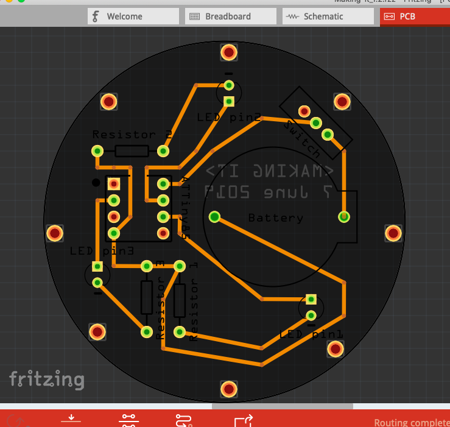
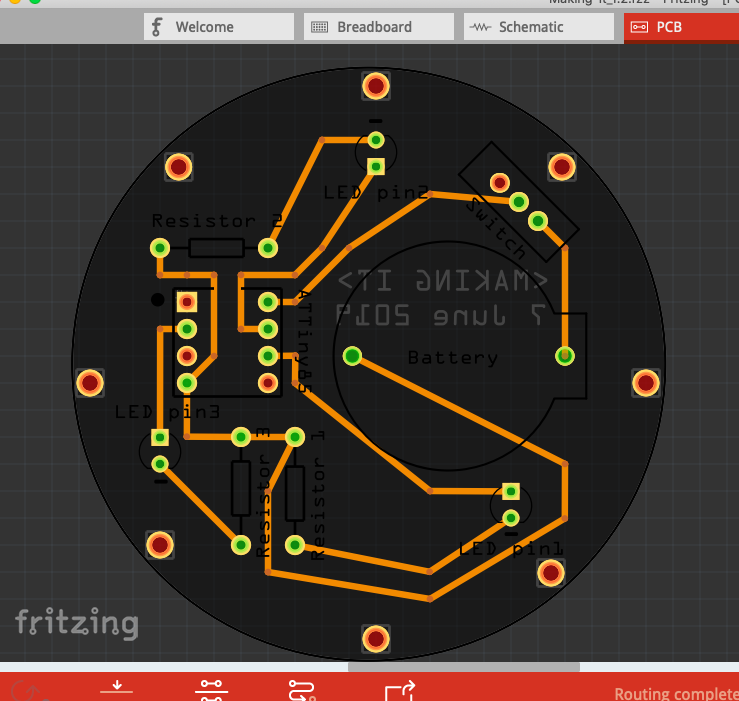
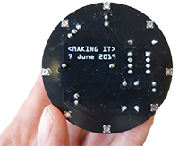
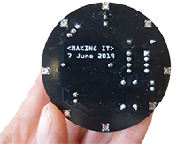
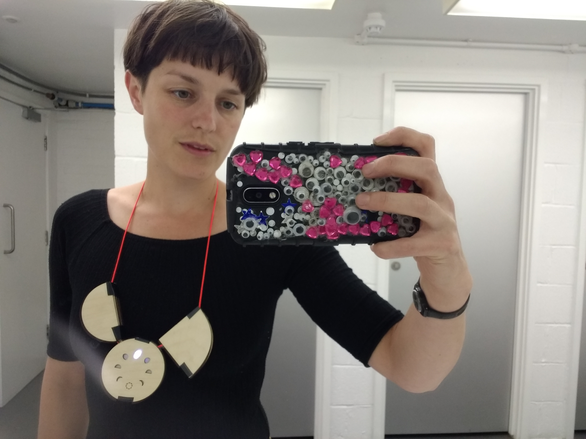
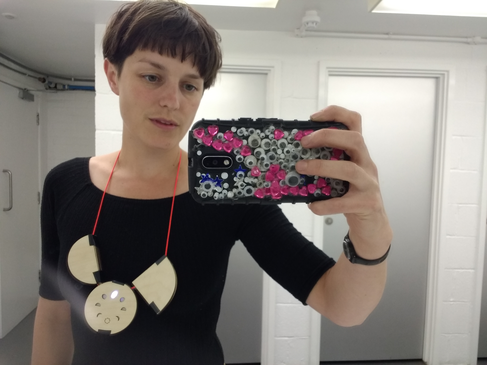
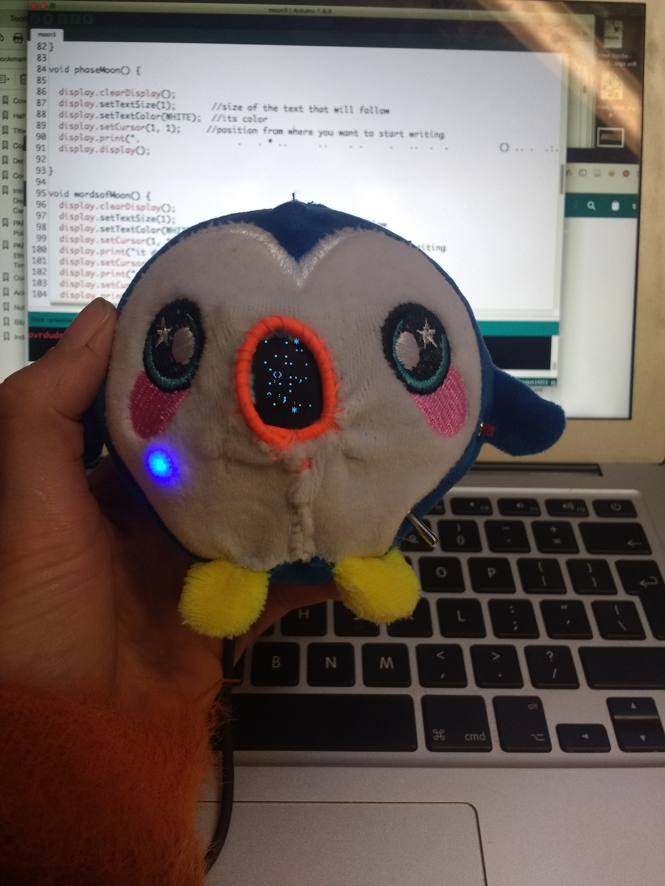
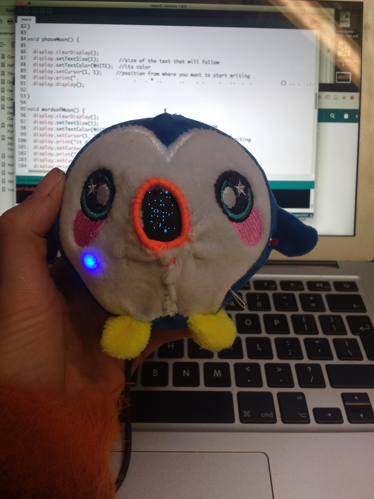
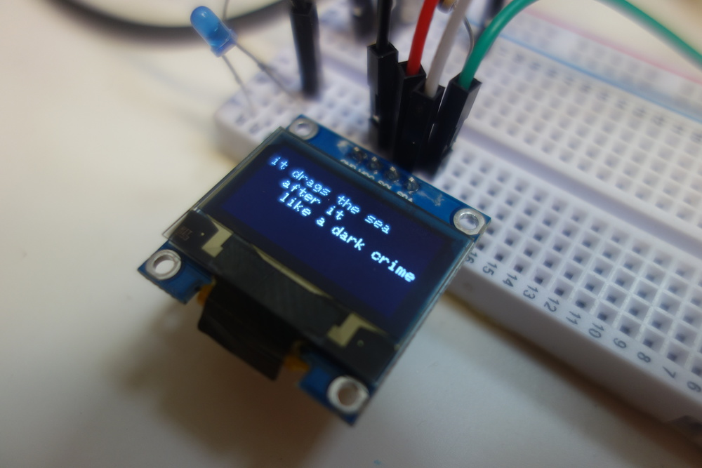
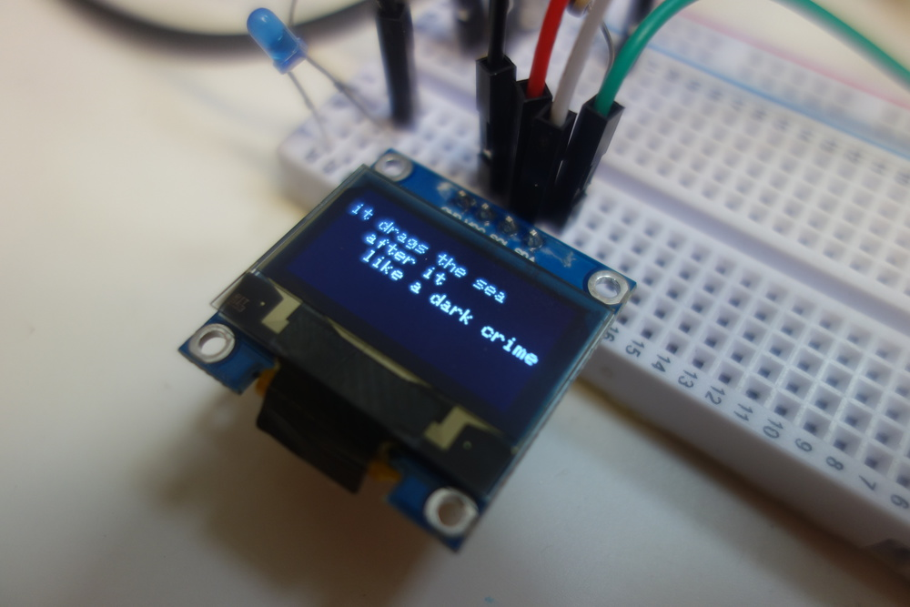

The making-it board was originally designed when I was in residence at KWMC - it was in response to the centre wanting people to develop hardware on a small budget. Through the process of collaborating with the centre I developed both some scenarios for wearables and environmental data (in this case with phases of the “moon”), as well as developing the board itself and a workshop to make with it. I am taking forward some of this work into the next phase of practice with Furtherfield.
 

 



 

 

 
